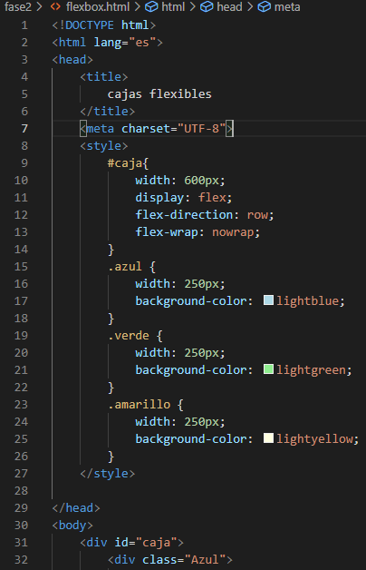
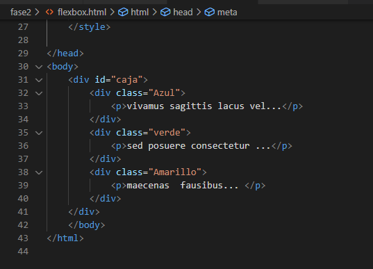
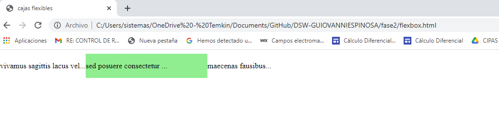
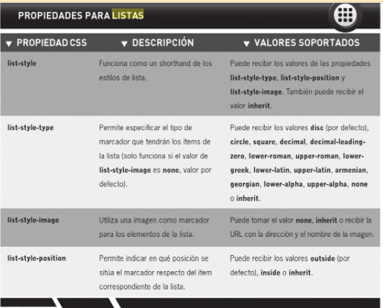

Flexbox
El uso de las cajas flexibles es muy simplebasta definir un contenedor padre como caja felxible, lo que hará que todos los elementos que incluya, los hijos adopten su comportamiento. La propiedad display acepta dos valores flex para una distribución flexible en block e inlineflex para una distribución en línea
Veamos un primer ejemplo muy simple; definimos una caja padre (div id=”caja” )con una distribución flexible display: flex: automáticamente todos sus hijos, 3 cajas (div) de color en este ejemplo, aparecen unas al lado de otras
Este es el código Utilizado Aubry, C. (2014). HTML5 y CSS3: para sitios con diseño web responsive. Ediciones ENI.



Listas
Las listas nos serán de gran utilidad para nuestros desarrollos, incluso mucho mas de lo que algunos lectores puedan imaginar, las listas nos pueden permitir definir desde menús desplegables y barras de navegación hasta bloques de anuncios.
Acontinuacion vamos a ver una tabla que nospermitira analizar las propiedades que se les puede aplicar a las listas De Luca, D. (2011). HTML5: Entienda el cambio, aproveche su potencial (Vol. 216). USERSHOP.

Enlaces
Los enlaces constituyen la esencia del lenguaje HTML y de las paginas web la riqueza del hipertexto es la que perite tejer esa red gigantesca que compone la web la etiqueta a /a inserta un enlace, href es el destino del enlace y va acompañado de un texto.
El destino del enlace puede ser:
• Un lugar de la página en curso
• Otra página del sitio web
• Algún lugar de otra página del sitio
• Una pagina de otro sitio existente
• Una dirección de correo electrónico
• Un archivo para descargar
La etiqueta tiene varios atributos
Href define la dirección url
Hreflang indica el idioma del documento de destino si es diferente al de documento de origen
Es interesante permitir a los visitantes de su sitio la posibilidad de contactar por correo electrónico; el destino en la etiqueta de enlace será entonces una dirección de correo electrónico, precedida del protocolo de correo electrónico(mail) es decir mailto:
Href=”mailto: sistemas@temkinco.com”
La activación del enlace abrirá una ventana de la aplicación de correo electrónico configurado por defecto es decir outlook Van Lancker, L. (2012). HTML5: Los fundamentos del lenguaje. Ediciones ENI.